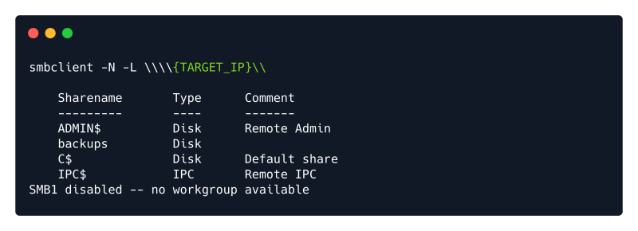
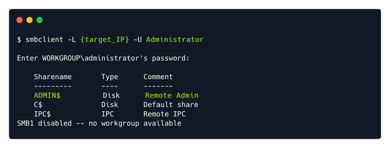
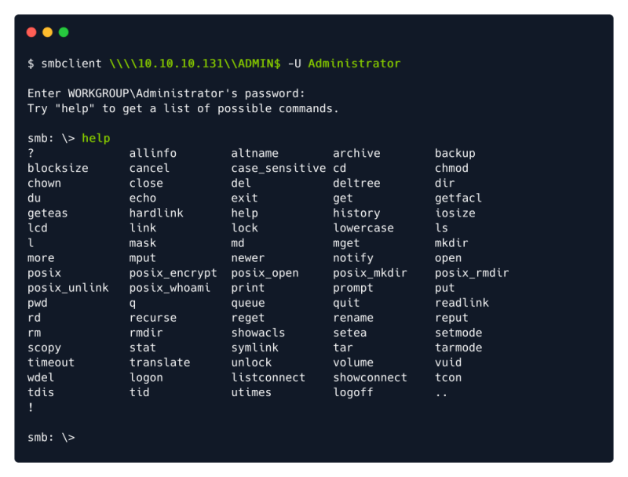

smbclient
SMBClient
Because we're trying to access an SMB share, we need a client to access resources on servers. We will be using SMBClient because it's part of the default samba suite. While it is available by default on Kali and Parrot,
To Install:
apt install smbclient
Default Port: 445
We can remotely access the SMB share using the syntax:
smbclient //[IP]/[SHARE]
Followed by the tags:
-U [name] : to specify the user
-p [port] : to specify the port
Anonymous Login:
Lets see if our interesting share has been configured to allow anonymous access, I.E it doesn't require authentication to view the files. We can do this easily by:
- using the username "Anonymous"
- connecting to the share we found during the enumeration stage
- and not supplying a password.
Example Usages of Smbclient:
smbclient -L {Target_IP}
It is used to list the samba share. Leave the password field blank

or use -N switch for no password (Only for Listing)
smbclient -N -L {Target_IP}

smbclient -L {Target_IP} -U Administrator
For misconfigurtions of Admin account. Note if -U not specified by default the user is root.

smbclient \\{Target_IP}\{Sharename}
Enter into a non secured samba share without password. (Leave Blank)

or use:
smbclient -N \\{Target_IP}\{Sharename}
Samba Commands:
help

smbclient \\{Target_IP}\{Sharename} -U {Username}

To Recursively download a samba share:
You can recursively download the SMB share too. Submit the username and password as nothing.
smbget -R smb://<ip>/share_name